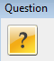

#Apply groom changes from ME7000 front-end
#This routine assume only will detect the Discard and Apply button and react according to user option
#inputs: optional: changeAction=[Apply, Discard]. Default will be Apply
#Usage: apply_groom_changes.sikuli
###############################################################
#common code for every sikuli code. Do not remove this section
from me7klib import *
###############################################################
#YOUR code start here
###############################################################
#This is your check for the inputs that you are expecting.
def Check_args():
#checking for optional arguments
if not Get_arg('changeAction'):
Set_arg('changeAction', 'Apply')
Print_debug('changeAction is not defined. Will use Apply as default.')
Check_args()
############################################################
#Main program definitions code start from this point
#Any global variables here
#Any definitions are here
def Change_Action():
find(); hover()
myaction = Get_arg('changeAction')
if myaction == 'Apply':
click(Pattern().targetOffset(37,1))
if exists():
find(); click(Pattern().targetOffset(-34,3))
if exists( ):
Capture_screen()
find(Pattern().similar(0.80)); click(Pattern().similar(0.80))
find(Pattern(
):
Capture_screen()
find(Pattern().similar(0.80)); click(Pattern().similar(0.80))
find(Pattern( ).exact().targetOffset(-33,0)); click(Pattern().exact().targetOffset(-35,1))
Exit_program('Groom failed with error.', 1)
else:
Print_debug('Groomed sdi successfully.')
sleep(5)
elif myaction == 'Discard':
click(Pattern().targetOffset(-31,1))
else:
Exit_program('Invalid changeAction enter not in range [Apply, Discard]: ' + myaction)
#######################################################
#Main program flow
Change_Action()
).exact().targetOffset(-33,0)); click(Pattern().exact().targetOffset(-35,1))
Exit_program('Groom failed with error.', 1)
else:
Print_debug('Groomed sdi successfully.')
sleep(5)
elif myaction == 'Discard':
click(Pattern().targetOffset(-31,1))
else:
Exit_program('Invalid changeAction enter not in range [Apply, Discard]: ' + myaction)
#######################################################
#Main program flow
Change_Action()